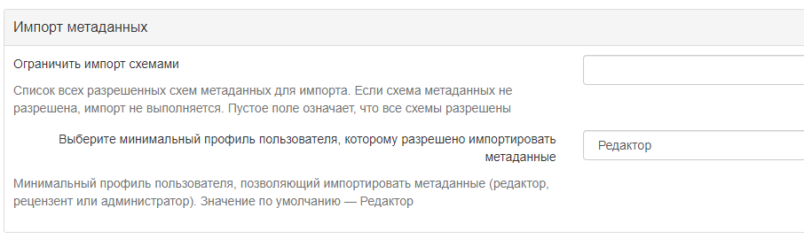
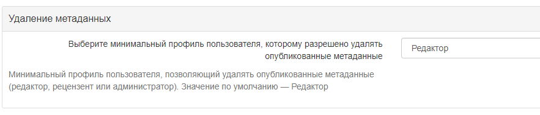
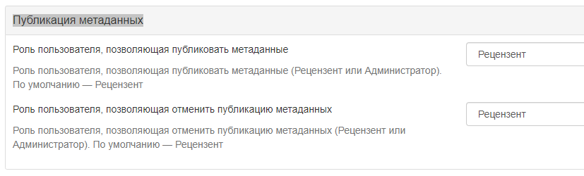
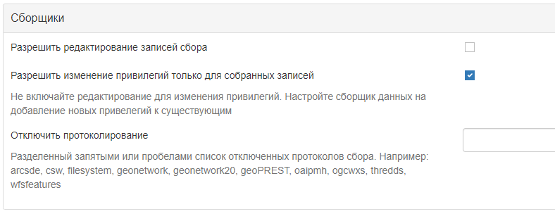

Настройка системы
Большинство настраиваемых параметров системы могут быть изменены пользователями-администраторами с помощью веб-интерфейса в Администрирование -> Настройки.
Важно
Изменение системных параметров существенно влияет на работу каталога. Неправильное использование некоторых настроек может привести к тому, что система будет работать не так, как ожидалось.

Поскольку страница системных настроек относительно длинная, кнопка Сохранить настройки может повторяться между разделами.
Описание каталога
-
Имя каталога - Название узла. Информация, которая помогает пользователю идентифицировать каталог.
-
Идентификатор каталога - Универсальный уникальный идентификатор (uuid), который отличает каталог от любого другого каталога. Рекомендуется оставить его в виде uuid. Он будет использоваться сборщиком данных для идентификации исходного каталога.
-
Организация - Организация, к которой принадлежит узел. Это также информация, которая помогает идентифицировать каталог обычному пользователю.
-
SVN UUID - Репозиторий Subversion, прикрепленный к узлу. Репозиторий используется для управления версиями метаданных.
Каталог
- Версия - Версия GeoNetwork (только для чтения).
- Подверсия - Дополнительная версия каталога (2только для чтения).
Сервер каталога
- Хост - Имя или IP-адрес узла (без http://). Имя используется при редактировании метаданных для создания ссылок на ресурсы.
- Если узел общедоступен из Интернета, вы должны использовать доменное имя.
- Если узел скрыт в вашей частной сети и у вас есть брандмауэр или веб-сервер, который перенаправляет входящие запросы на этот узел, вам необходимо ввести общедоступный адрес брандмауэра или веб-сервера. Типичная конфигурация - это веб-сервер Apache по адресу A, который является общедоступным и перенаправляет запросы на сервер Tomcat по частному адресу B. В этом случае вам необходимо ввести A в параметре host.
-
Порт - Номер порта сервера (обычно 80 или 8080). Если используется протокол HTTP, установите его равным 80.
-
Предпочтительный протокол - Определяет протокол для доступа к каталогу. Протокол HTTP, используемый для доступа к серверу. Выбор http означает, что все сообщения с каталогом будут видны всем, кто использует этот протокол. Поскольку это включает имена пользователей и пароли, это небезопасно. Выбор https означает, что вся связь с каталогом будет зашифрована.
-
Уровень логов - Определяет уровень логирования в журнале приложения. После внесения изменений в журнал можно будет проверить в разделе "Статистика и статус" в разделе
Активность. -
Часовой пояс - Часовой пояс задаётся для корректной работы времени в каталоге. Если не установлен, будет использоваться часовой пояс JVM по умолчанию.

Параметры "Интранета" (внутренней сети)
Часто организации требуется наладить процесс автоматическое распознавание анонимных внутренних пользователей, которые получают доступ к узлу внутри организации (Интрасеть), и анонимных внешних пользователей из Интернета. Каталог определяет анонимных пользователей внутри организации как принадлежащих к группе Интранет, в то время как анонимные пользователи за пределами организации определяются группой Все. Чтобы автоматически распознавать пользователей, принадлежащих к группе Интранет, необходимо указать каталогу IP-адрес интрасети и сетевую маску.
- Сеть - Адрес внутренней сети в виде IP-адреса (например, 147.109.100.0). Это может быть список IP-адресов, разделенных запятыми.
- Маска сети - Маска сети интрасети (например, 255.255.255.0). Укажите как можно больше масок сети и IP-адресов.
Если параметры внутренней сети не заданы, группа Интранет не будет отображаться на панели общего доступа.
Прокси-сервер
На странице настроек предлагается задать конфигурацию прокси-сервера. Эта конфигурация используется приложением для доступа к Интернету для получения онлайн-ресурсов, например, в рамках процесса сбора урожая.
- Использовать прокси - Включите прокси-сервер, если каталог используется в связке с прокси-сервером и если необходимо использовать его для доступа к удаленным ресурсам.
- Хост прокси - IP-адрес или имя прокси-сервера.
- Порт прокси - Порт прокси-сервера.
- Имя пользователя прокси - Имя пользователя на прокси-сервере.
- Пароль пользователя прокси - Пароль пользователя прокси.
- Игнорировать список хостов - Чтобы обойти определенные хосты, нужно ввести IP-адрес или имя хоста, например www.mydomain.com, или диапазон адресов, используя подстановочные знаки, например 192.168.2.*. Символ | используется для разделения значений разных хостов.
Параметры прокси-сервера JVM также могут потребоваться для правильной настройки прокси-сервера для всего удаленного доступа.
Обратная связь
При надобности каталог может отправлять электронные письма. Это возможно, если:
- используется система регистрации пользователей
- используются статусы состояния рабочего процесса (см. Жизненный цикл)
- загружен файл с записью метаданных и выбрана привилегия уведомлять
В этом разделе настраивается используемый почтовый сервер.
- Электронная почта - Это адрес электронной почты администратора, используемый для отправки сообщений.
- SMTP хост - Имя почтового сервера или IP-адрес, используемые для отправки электронных писем.
- SMTP-порт - SMTP-порт.
- Использовать SSL - Использовать SSL-верификацию.
- Имя пользователя - Имя пользователя на SMTP-сервере, если он подключён.
- Пароль - Пароль пользователя на SMTP-сервере, если он подключён.
Результаты поиска метаданных
Параметры поиска метаданных определяют ограничения на результаты поиска для пользователя.
- Максимум выбранных записей - Максимальное количество результатов поиска, которые пользователь может выбрать и обработать с помощью пакетных операций, например, установить права доступа, категории и т. д. Этот параметр позволяет избежать длительных действий, которые могут привести к ошибке нехватки памяти.
Служба каталогов Web (CSW)
См. раздел Настройка CSW.
Самостоятельная регистрация пользователей
См. раздел Саморегистрация пользователей.
Обратная связь пользователей
-
Включить обратную связь приложения - Включение этой опции позволяет отправлять отзыв о приложении системному администратору. Для этого также необходимо настроить почтовый сервер.
-
Включить обратную связь по метаданным - Включение этой опции позволяет оставить отзыв владельцу метаданных и системному администратору о записи метаданных. Для этого необходимо, чтобы почтовый сервер также был настроен.
Ссылка в записях метаданных
- Активные гиперссылки - Если флажок поставлен, GeoNetwork будет показывать активные гиперссылки в метаданных.
Рейтинг метаданных
- Локальный рейтинг - Если этот параметр включен, каталог будет рассчитывать оценки пользователей только для метаданных с текущего узла (не распределенных между другими узлами GeoNetwork). Это относится только к записям, собранным с использованием протокола GeoNetwork.
- Уровень уведомления о рейтинге - Определяет, каких пользователей следует уведомлять в случае изменения рейтинга.
- Группы для уведомления в случае изменения рейтинга - Список групп, разделенных символом |, для уведомления в случае изменения оценки (для уровня уведомления «Уведомить группу(ы) по электронной почте»).
XLink метаданных
Распознаватель XLink заменяет содержимое элементов с атрибутом @xlink:href (за исключением некоторых элементов, таких как srv:operatesOn) содержимым, полученным из содержимого URL-адреса @xlink:href. Распознаватель XLink должен быть включен, если нужно собирать фрагменты метаданных или повторно использовать фрагменты метаданных в своих записях метаданных (например. при использовании справочника контактов).
- Включить анализ XLink: - Если включено, будут анализироваться XLinks к фрагментам метаданных в записях
- Включить локальные XLink - Локальные ссылки XLinks используют URL-адрес local://
/ для создания ссылок на соответствующие разделы вместо URL-адреса HTTP. Локальные ссылки обычно работают быстрее, чем HTTP-ссылки. - При анализе XLink пропускать элементы - Список элементов для пропуска при анализе XLink через запятую.
- Разрешить удаление подшаблонов, на которые ссылается xlink - Если отмечено, то разрешить.
Смотреть также
Для повышения производительности каталог будет кэшировать содержимое, которого нет в локальном каталоге.
Чтобы очистить кэш XLink, нужно зайти в Администрирование -> Инструменты, если фрагменты были обновлены.

Обновление метаданных
Для каждой схемы метаданных в каталоге есть преобразование XSL (update-fixed-info.xsl), которое можно применить к записи метаданных, принадлежащей этой схеме.
Цель этого преобразования - обеспечить возможность применения определённой схемы, информации о сайте и каталоге
к записи метаданных при каждом сохранении записи метаданных в редакторе.
В качестве примера, это преобразование используется для создания и сохранения URL-адреса любых файлов,
загруженных и сохраненных вместе с записью метаданных в редакторе.
- Автоматические правки: Включено по умолчанию. Рекомендуется не использовать редактор метаданных, если автоматическое исправление отключено. Более подробную информацию смотрите в разделе http://trac.osgeo.org/geonetwork/ticket/368.
Статистика поиска
Если включено, поисковая статистика будет собираться и храниться в базе данных.
Статистика поиска хранится в базе данных и может быть запрошена с помощью страницы Статистика поиска.
Открыть провайдер Archive Initiative (OAI-PMH)
Опции в этой группе управляют тем, как сервер OAI отвечает на OAIPMH-запросы из удаленных ресурсов.
-
Поиск по дате: Сборщики OAI могут запрашивать у GeoNetwork записи в определенном диапазоне дат. GeoNetwork может использовать одно из двух полей даты из метаданных для проверки совпадения с этим диапазоном дат. По умолчанию используется поле Протяженность во времени, которая представляет собой временную протяженность из записи метаданных. Другой вариант, Дата модификации, использует дату модификации записи метаданных в базе данных GeoNetwork. Дата модификации - это последний раз, когда запись метаданных обновлялась или собиралась в GeoNetwork.
-
Лимит времени ResumptionToken: Записи метаданных, соответствующие поисковому запросу OAI-сборщика, обычно возвращаются сборщику в группах с фиксированным размером (например, в группах по 10 записей). В каждую группу включается маркер возобновления, чтобы сборщик мог запросить следующую группу записей. Таймаут маркера возобновления - это время (в секундах), в течение которого сервер GeoNetwork OAI будет ожидать использования маркера возобновления. Если таймаут превышен, сервер GeoNetwork OAI отбросит результаты поиска и откажется распознавать маркер возобновления. Цель этой функции - обеспечить освобождение ресурсов на сервере GeoNetwork OAI.
-
Размер кэша: Максимальное количество одновременных сборов OAI, которые могут храниться в кэше.
Перезапустите каталог, чтобы запустить настройки OAI.
Конфигурация директивы INSPIRE
Смотреть Настройка директивы INSPIRE.
Индексация
Данный параметр определяет, сколько процессорных потоков выделено для задач индексирования в GeoNetwork. Если на компьютере, на котором запущен GeoNetwork, много процессорных ядер, то возможно определить, сколько из них будет участвовать в индексации. Это может значительно ускорить выполнение крупных задач индексации (например, изменение привилегий для 20 000 записей), поскольку GeoNetwork может разделить задачу индексации на несколько частей и назначить их разным процессорным ядрам.
Количество потоков обработки - Максимальное количество потоков обработки, которое может быть выделено для задачи индексирования.
Примечание: этот параметр доступен только для проверенных баз данных. Это базы данных PostGIS и Oracle. Также следует тщательно продумать, сколько подключений к базе данных будет выделено в конфигурации, поскольку каждый поток может установить одно подключение к базе данных на время длительного сеанса индексации. Более подробную информацию о том, как настроить количество подключений в пуле подключений к базе данных, смотрите в разделе Расширенная конфигурация.
Страница прав на метаданные
Отображать только группы, к которым принадлежит пользователь: если включено, то на странице прав доступа метаданных будут отображаться только те группы, к которым принадлежит пользователь (если пользователь не является администратором). На данный момент эта опция не может быть отключена и, вероятно, будет признана устаревшей в следующей версии GeoNetwork.
Импорт метаданных
- Ограничить импорт схемами: Список всех разрешенных схем для импорта метаданных. Если схема метаданных не разрешена, импорт не выполняется. Используйте пустое значение, чтобы разрешить все схемы.
- Выберите минимальный профиль пользователя, которому разрешено импортировать метаданные: Минимальный профиль пользователя, разрешенный для импорта метаданных ("Редактор",
РецензентилиАдминистратор). Значение по умолчанию -Редактор.

Удаление метаданных
Позволяет выбрать тип пользователя, которому разрешено удалять опубликованные метаданные.

Публикация метаданных
Позволяет выбрать пользователя, которому разрешено публиковать и отменять публикацию метаданных.

Сборщики
- Разрешить редактирование записей сбора: Включает/отключает редактирование собранных записей в каталоге. По умолчанию собранные записи не могут быть отредактированы.
- Разрешить изменение привилегий только для собранных записей: Не включайте редактирование для изменения привилегий. Настройте сборщик данных на добавление новых привелегий к существующим
- Отключить протоколирование: Разделенный запятыми или пробелами список отключенных протоколов сбора. Например: arcsde, csw, filesystem, geonetwork, geonetwork20, geoPREST, oaipmh, ogcwxs, thredds, wfsfeatures
